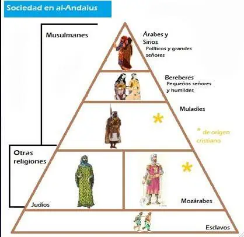
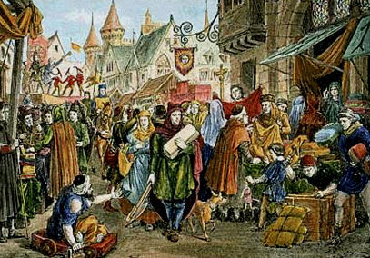

Sociedad
5.1 La socieddad andalusí
La población de al-Ándalus era muy heterogénea, sobre todo al principio, y varió durante el tiempo. Desde el punto de vista étnico estaba constituida por los árabes, que eran el grupo dominante y dirigente, pero minoritario. La sociedad militar estaba constituida por descendientes de los godos seguidos por los bereberes, provenientes del norte de África, que conformaban el grueso de los ejércitos omeyas. Los judíos (grupo minoritario) también habitaban en al-Ándalus, pero en barrios separados. También cabe destacar otras etnias que entraron como sirvientes libres o como esclavos, a través del comercio con territorios limítrofes principalmente, entre los que se encuentran etíopes, armenios, egipcios, nubios, francos y eslavos (el grupo más numeroso importado del este de Europa, de ahí el nombre "esclavo").37 En cuanto a las mujeres esclavas, también eran categorizadas según su proveniencia étnico-geográfico, siendo principalmente bereberes, negras, rumíes, francas o gallegas.
La estructura social andalusí estaba condicionada por el origen étnico de cada grupo y por la clase social. Aunque el islam solo reconoce un tipo de sociedad, la umma o comunidad de creyentes, los juristas islámicos fundaron el estatuto social sobre la condición de hombres libres y esclavos. La estructuración interna de cada grupo respondía al siguiente esquema: aristocracia (jassa), notables (ayan) y masa (amma).
Desde el punto de vista religioso la población era o musulmana o dhimmi (cristianos y judíos). Se conoce como muladíes a los cristianos de al-Ándalus que se habían convertido al islam, mientras que se llama mozárabes a quienes conservaron la religión cristiana. Tanto unos como otros adoptaron costumbres y formas de vida musulmanas. La clase dominante estaba formada por árabes, bereberes y muladíes y la clase dominada lo estaba por cristianos y judíos. Los mozárabes y los judíos gozaban de libertad de culto, pero a cambio estaban obligados al pago de dos tributos: el impuesto personal (yizia) y el impuesto predial sobre el ingreso de las tierras (jarach). Estos dos grupos tenían autoridades propias, gozaban de libertad de circulación y podían ser juzgados de acuerdo con su derecho.
Ciudades como Toledo, Mérida, Valencia, Córdoba y Lisboa eran importantes centros mozárabes. La convivencia no siempre estuvo libre de conflictos. En Toledo los mozárabes llegaron a encabezar una revuelta contra el dominio árabe. Algunos mozárabes emigraron a los reinos cristianos del norte, difundiendo con ellos elementos arquitectónicos, onomásticos y toponímicos de la cultura mozárabe. Los judíos se dedicaban al comercio y a la recolección de impuestos. Fueron también médicos, embajadores y tesoreros. El judío Hasdai ibn Shaprut (915-970), llegó a ser uno de los hombres de confianza del califa Abderramán III. En cuanto a su número, se calcula que a finales del siglo XV había unos 50 000 judíos en Granada y unos 100 000 en toda la Iberia islámica.
Es muy difícil calcular la población del Ándalus durante el periodo de mayor extensión del dominio islámico (siglo X), pero se ha sugerido una cifra próxima a los 10 millones de habitantes. Los árabes se establecieron en las tierras más fértiles: el valle del Guadalquivir, levante y el valle del Ebro. Los bereberes ocuparon las áreas montañosas, como las sierras de la Meseta Central y la Serranía de Ronda, siendo también numerosos en Algarve, si bien, después de la revuelta bereber de 740, muchos regresaron al norte de África. En 741 llegaron a al-Ándalus un gran número de sirios con el objetivo de ayudar en la represión de la revuelta bereber, que acabarían por asentarse en el este y sur peninsular. Hay igualmente fuentes que apuntan hacia la presencia de familias yemeníes en ciudades como Silves. Cabe aún destacar la presencia de dos grupos étnicos minoritarios, los negros y los eslavos.
Los africanos subsaharianos llegaron a al-Ándalus como esclavos o como mercenarios. Desempeñaron funciones como miembros de la guardia personal de los soberanos, mientras que otros trabajaban como mensajeros. Las mujeres negras fueron concubinas o criadas. Algunos eslavos consiguieron comprar su libertad y entre ellos hubo quienes alcanzaron importantes cargos en la administración. Durante el periodo de los primeros reinos de taifas (siglo XI) algunos libertos formaron sus propios reinos.
Las casas de las clases más acomodadas se caracterizaban por su comodidad y belleza, gracias a la presencia de divanes, alfombras, almohadas y tapices que cubrían las paredes. En estas casas las noches se animaban con la presencia de poetas, músicos y bailarines.
En las zonas rurales y urbanas existían baños públicos (hammam), que funcionaban no solo como espacios para la higiene, sino también de convivencia. Los baños árabes presentaban una estructura heredada de los baños romanos, con varias salas con piscinas de agua fría, tibia y caliente. En ellos trabajaban masajistas, barberos, responsables de guardarropa, maquilladores, etc. La mañana estaba reservada a los hombres y la tarde a las mujeres. Con la Reconquista cristiana muchos de estos baños se cerraron al entenderse que eran locales propicios a las conspiraciones políticas, así como a la práctica de relaciones sexuales.
Tras una primera etapa de asimilación y emulación de los logros conseguidos por el Califato de Bagdad y los distintos reinos persas (no se debe olvidar que Persia es el centro cultural primordial del islam clásico), se estableció una cultura andalusí original, alcanzando un alto nivel, sobre todo en los siglos X, XIy XIII, hasta el punto de que al-Ándalus se convirtió en referencia para Europa y para el resto del islam, y convirtiéndose además en transmisor principal de los conocimientos griegos, árabes, chinos e hindúes llegados de oriente. Por todo esto, muchos historiadores hablan de un primer Renacimiento Europeo, o Prerrenacimiento. El árabe se impuso como idioma culto, aunque gran parte de la población empleaba lenguas romances o hebreo. Esta diversidad lingüística se reflejó en la literatura, concretamente en la moaxaja.
Gracias al uso del papel, que permitía copias económicas, la biblioteca de al-Hakam II en Córdoba (una de las 70 en la ciudad), contenía 400 000 volúmenes, entre ellos, los tesoros de la antigüedad greco-latina y aportaciones originales de pensadores musulmanes como Avempace y Averroes.

SOCIEDAD ANDALUSÍ5.2 Las minorías religiosas: cristianos y judíos
A los no-musulmanes se les otorgó el estatus de dhimmi (las personas bajo protección), con los hombres adultos pagando un impuesto "yizia", equivalente a un dinar por año con exenciones para los ancianos y los discapacitados. Aquellos que no eran ni cristianos ni judíos, como los paganos, recibieron el estatus de Majus. El tratamiento de los no-musulmanes en el Califato ha sido un tema de considerable debate entre los estudiosos y comentaristas, especialmente aquellos interesados en establecer paralelos con la coexistencia de musulmanes y no musulmanes en el mundo moderno.
Los judíos constituían más del cinco por ciento de la población. Al-Ándalus fue un centro clave de la vida judía durante la temprana Edad Media, produciendo importantes académicos y una de las comunidades judías más estables y ricas. El período más largo de tolerancia relativa comenzó después de 912 con el reinado de Abderramán III y su hijo, Alhakén II, cuando los judíos de al-Ándalus prosperaron, dedicándose al servicio del Califato de Córdoba, al estudio de las ciencias, del comercio y la industria, especialmente el comercio de seda y esclavos, promoviendo así la prosperidad del país. El sur de Iberia se convirtió en un asilo para los judíos oprimidos de otros países.
Bajo los almorávides y los almohades hubo una persecución intermitente de judíos, pero las fuentes son extremadamente escasas y no dan una imagen clara, aunque la situación parece haberse deteriorado después de 1160. Hubo pogromos musulmanes contra judíos en al-Ándalus ocurridos en Córdoba (1011) y en Granada (1066). Sin embargo, las masacres de dhimmis son raras en la historia islámica.
Los almohades, que habían tomado el control de los territorios magrebíes y andaluces de los almorávides en 1147, superando con creces a los almorávides en perspectiva fundamentalista, y trataron a los no musulmanes con severidad. Ante la elección de la muerte o la conversión, muchos judíos y cristianos emigraron. Algunos, como la familia de Maimónides, huyeron al este a tierras musulmanas más tolerantes.

CRISTIANOS Y JUDÍOSRegresa al enlace a la Historia de Al-Ándalus.